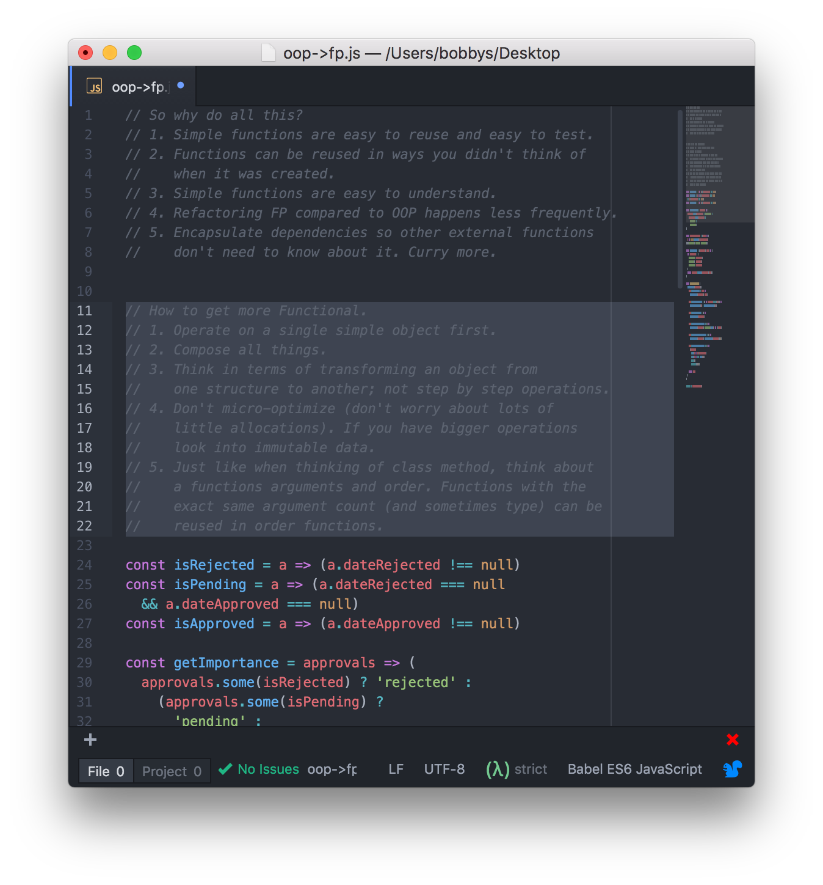

class: center, middle, full # OOP to FP #### How and why to write functionally in JS ###### use <- and -> to navigate --- class: middle, full ## Functional Programming The goals of FP is: * Write code that's easier to understand. * Reuse code much better. * Better future proofing by using existing code for purposes that we're considered at creation time. * Spend less time refactoring. * Unit tests take less time to write/manage while being more stable. * Be more concise with your code to rely less on comments (which easily become stable and are wrong). * Write code that's easier to reason about so it's harder to write bugs into your code. --- class: middle, full ## Functional Programming Looking at the trade-offs between OOP and FP is challenging. We'll from some traditional OOP to FP. This will help us learn how to write FP code. It also give us a change to discuss why many code bases can benefit by using FP patterns. --- --- --- <img src="imgs/03.png" /> --- --- --- --- --- --- --- --- <img src="imgs/11.png" /> --- --- --- --- --- --- --- --- <img src="imgs/19.png" /> --- --- --- --- --- --- --- --- --- --- --- --- --- --- --- --- --- --- --- --- --- <img src="imgs/40.png" /> --- --- --- --- --- --- --- --- --- --- --- --- --- ---  --- class: middle, full ## Why Functional Programming? 1. Simple functions are easy to reuse and easy to test. 2. Functions can be reused in ways you didn't think of when it was created. 3. Simple functions are easy to understand. 4. Refactoring FP compared to OOP happens less frequently. 5. Encapsulate dependencies so other external functions don't need to know about it. Curry more. ## How to be Functional. 1. Operate on a single simple object first. 2. Compose all things. 3. Think in terms of transforming an object from one structure to another; not step by step operations. 4. Don't micro-optimize (don't worry about lots of little allocations). If you have bigger operations look into immutable data. 5. Just like when thinking of class method, think about a functions arguments and order. Functions with the exact same argument count (and sometimes type) can be reused in order functions. --- class: center, middle, full # Thanks [@puppybits](https://twitter.com/puppybits)